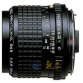

645 A 55/2.8宾得镜头。
解像力很不错，即使是用在135上也不差，色彩是典型的宾家色彩，做工很好，结实，用起来很放心，镀膜漂亮，抗眩光尚可。自动光圈。
上面都说了。
就是焦外不太好。
二手购入，成色尚可。这个镜头转接到5D2后，成像较之NIKKOR AIS 50/1.4和佳能EF 50/1.4，在色彩表现上实在好太多：色彩浓郁而还原准确、油润不干燥，层次丰富而细节清晰。
色彩漂亮
容易进灰